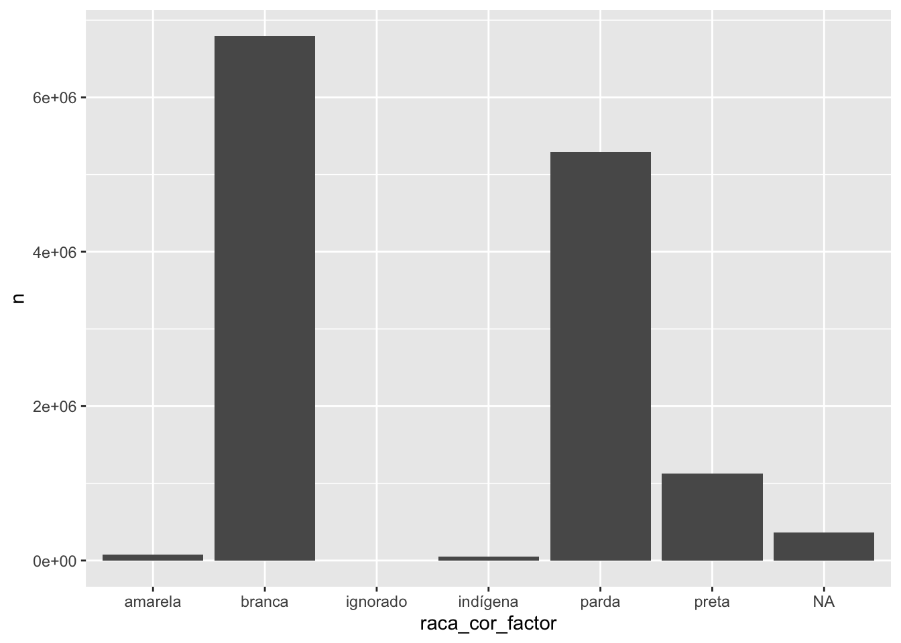
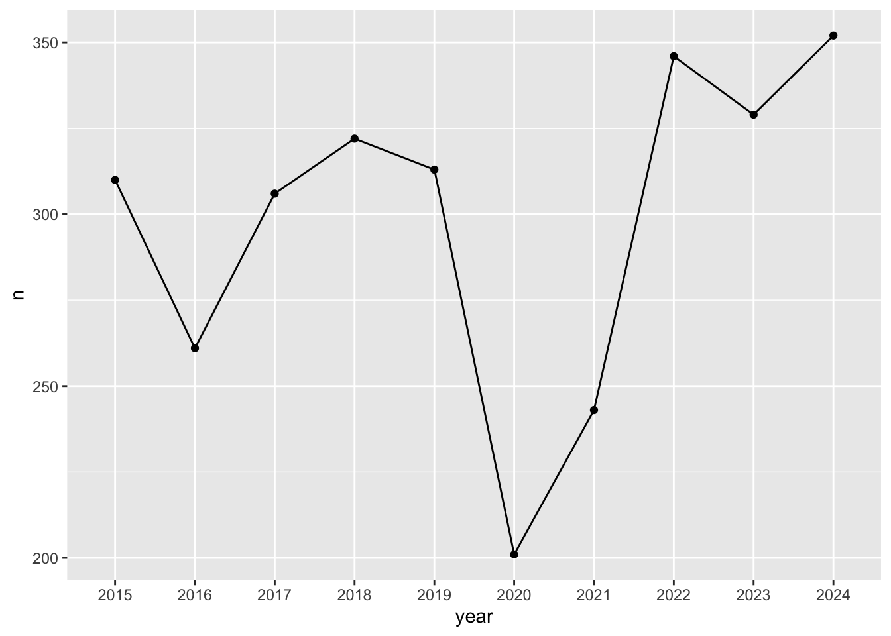
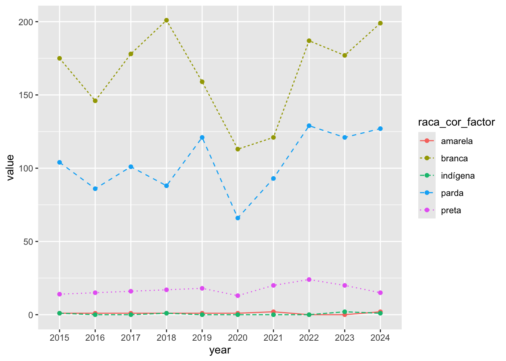
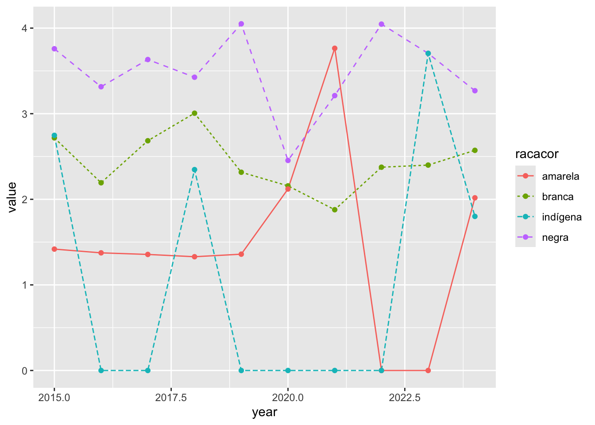
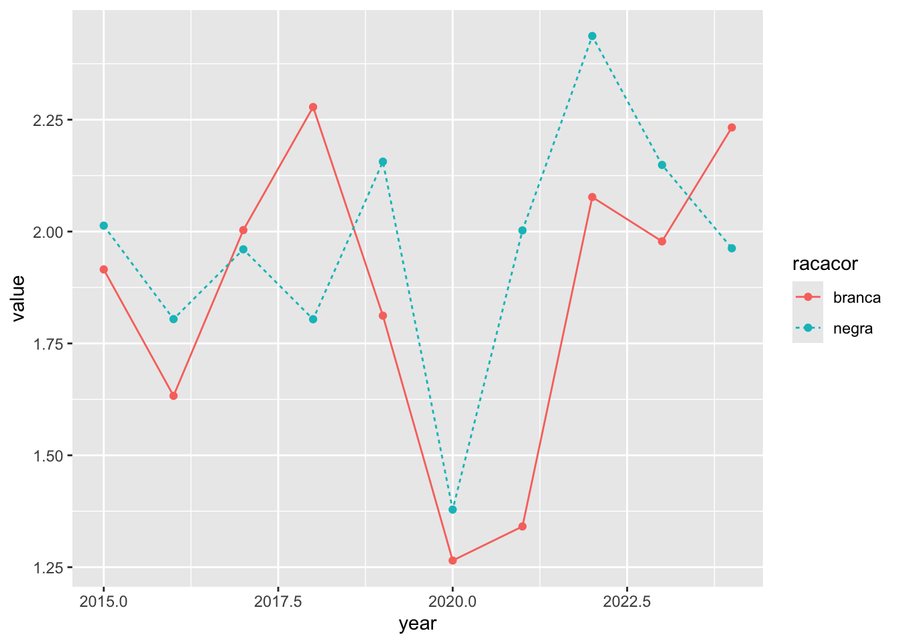

5 Accessing the Raça/Cor Variable in DATASUS
5.2 Constrir dataframe (df) com identificação racial
racacor_df <- readRDS("./data/racacor_df.rds")
racacor_df## RACACOR n raca_cor_factor
## 1 1 6794687 branca
## 2 4 5295315 parda
## 3 2 1127508 preta
## 4 <NA> 364106 <NA>
## 5 3 74842 amarela
## 6 5 46782 indígena
## 7 9 5 ignorado5.3 Transformar variável Raça/Cor
Transforma coluna com caracteres em nomes de raça/cor
racacor_df <- racacor_df %>%
dplyr::mutate(raca_cor_factor = ifelse(racacor_df$RACACOR == "1", "branca",
ifelse(racacor_df$RACACOR == "2", "preta",
ifelse(racacor_df$RACACOR == "3", "amarela",
ifelse(racacor_df$RACACOR == "4", "parda",
ifelse(racacor_df$RACACOR == "5", "indígena",
ifelse(racacor_df$RACACOR == "9", "ignorado","0")))))))Verificar objeto racacor_df
racacor_df## RACACOR n raca_cor_factor
## 1 1 6794687 branca
## 2 4 5295315 parda
## 3 2 1127508 preta
## 4 <NA> 364106 <NA>
## 5 3 74842 amarela
## 6 5 46782 indígena
## 7 9 5 ignorado5.4 Gráfico de barras por categoria da Variável Raça/Cor
Nesta parte, poderemos estimar o número de indivíduos sob risco, considerando as categorias raciais brasileiras.
library(ggplot2)
# Basic barplot
ggplot(data=racacor_df, aes(x=raca_cor_factor, y=n)) +
geom_bar(stat="identity")
dados_agregados_year <- readRDS("./data/dados_agregados_year.rds")
dados_agregados_year## # A tibble: 10 × 2
## year n
## <chr> <int>
## 1 2015 1264175
## 2 2016 1309774
## 3 2017 1312663
## 4 2018 1316719
## 5 2019 1349801
## 6 2020 1207189
## 7 2021 1401033
## 8 2022 1544266
## 9 2023 1465610
## 10 2024 1532015Remover NAs dos dados agregados por ano
dados_agregados_year <- dados_agregados_year[ which(
dados_agregados_year$year != "NA"), ]5.5 Mortalidade Anual Total
library(ggplot2)
# Basic line plot with points
ggplot(data=dados_agregados_year, aes(x=year, y=n, group=1)) +
geom_line()+
geom_point()
5.5.1 Mortalidade Anual Total Usando Variável Raça/Cor
Mortalidade anual total (figura acima) e mortalidade anual usando a variável Raça/Cor (figura abaixo) foram feitas usando (STHTDA202408?) como referência.
Carregar dados_appended_melted
dados_appended_melted <- readRDS("./data/dados_appended_melted.rds")
dados_appended_melted## year variable value
## 1 2015 1 643928
## 2 2016 1 665737
## 3 2017 1 663147
## 4 2018 1 668707
## 5 2019 1 686474
## 6 2020 1 523848
## 7 2021 1 644210
## 8 2022 1 787363
## 9 2023 1 737590
## 10 2024 1 773683
## 11 2015 2 93830
## 12 2016 2 97747
## 13 2017 2 99745
## 14 2018 2 102889
## 15 2019 2 107306
## 16 2020 2 107171
## 17 2021 2 122852
## 18 2022 2 131005
## 19 2023 2 129047
## 20 2024 2 135916
## 21 2015 3 7051
## 22 2016 3 7276
## 23 2017 3 7375
## 24 2018 3 7524
## 25 2019 3 7359
## 26 2020 3 4716
## 27 2021 3 5313
## 28 2022 3 9261
## 29 2023 3 9053
## 30 2024 3 9914
## 31 2015 4 458807
## 32 2016 4 483026
## 33 2017 4 497839
## 34 2018 4 496106
## 35 2019 4 509936
## 36 2020 4 531808
## 37 2021 4 587323
## 38 2022 4 582469
## 39 2023 4 561438
## 40 2024 4 586563
## 41 2015 5 3640
## 42 2016 5 3867
## 43 2017 5 3911
## 44 2018 5 4261
## 45 2019 5 4273
## 46 2020 5 5173
## 47 2021 5 5361
## 48 2022 5 5343
## 49 2023 5 5398
## 50 2024 5 5555
## 51 2015 9 0
## 52 2016 9 5
## 53 2017 9 0
## 54 2018 9 0
## 55 2019 9 0
## 56 2020 9 0
## 57 2021 9 0
## 58 2022 9 0
## 59 2023 9 0
## 60 2024 9 0
## 61 2015 NA 56919
## 62 2016 NA 52116
## 63 2017 NA 40646
## 64 2018 NA 37232
## 65 2019 NA 34453
## 66 2020 NA 34473
## 67 2021 NA 35974
## 68 2022 NA 28825
## 69 2023 NA 23084
## 70 2024 NA 20384Obter variável raça/cor como palavras descritivas ao invés de números.
dados_appended_melted <- dados_appended_melted %>%
dplyr::mutate(raca_cor_factor = ifelse(dados_appended_melted$variable == "1", "branca",
ifelse(dados_appended_melted$variable == "2", "preta",
ifelse(dados_appended_melted$variable == "3", "amarela",
ifelse(dados_appended_melted$variable == "4", "parda",
ifelse(dados_appended_melted$variable == "5", "indígena",
ifelse(dados_appended_melted$variable == "9", "ignorado","0")))))))
# Checar dados_appended_melted
dados_appended_melted## year variable value raca_cor_factor
## 1 2015 1 643928 branca
## 2 2016 1 665737 branca
## 3 2017 1 663147 branca
## 4 2018 1 668707 branca
## 5 2019 1 686474 branca
## 6 2020 1 523848 branca
## 7 2021 1 644210 branca
## 8 2022 1 787363 branca
## 9 2023 1 737590 branca
## 10 2024 1 773683 branca
## 11 2015 2 93830 preta
## 12 2016 2 97747 preta
## 13 2017 2 99745 preta
## 14 2018 2 102889 preta
## 15 2019 2 107306 preta
## 16 2020 2 107171 preta
## 17 2021 2 122852 preta
## 18 2022 2 131005 preta
## 19 2023 2 129047 preta
## 20 2024 2 135916 preta
## 21 2015 3 7051 amarela
## 22 2016 3 7276 amarela
## 23 2017 3 7375 amarela
## 24 2018 3 7524 amarela
## 25 2019 3 7359 amarela
## 26 2020 3 4716 amarela
## 27 2021 3 5313 amarela
## 28 2022 3 9261 amarela
## 29 2023 3 9053 amarela
## 30 2024 3 9914 amarela
## 31 2015 4 458807 parda
## 32 2016 4 483026 parda
## 33 2017 4 497839 parda
## 34 2018 4 496106 parda
## 35 2019 4 509936 parda
## 36 2020 4 531808 parda
## 37 2021 4 587323 parda
## 38 2022 4 582469 parda
## 39 2023 4 561438 parda
## 40 2024 4 586563 parda
## 41 2015 5 3640 indígena
## 42 2016 5 3867 indígena
## 43 2017 5 3911 indígena
## 44 2018 5 4261 indígena
## 45 2019 5 4273 indígena
## 46 2020 5 5173 indígena
## 47 2021 5 5361 indígena
## 48 2022 5 5343 indígena
## 49 2023 5 5398 indígena
## 50 2024 5 5555 indígena
## 51 2015 9 0 ignorado
## 52 2016 9 5 ignorado
## 53 2017 9 0 ignorado
## 54 2018 9 0 ignorado
## 55 2019 9 0 ignorado
## 56 2020 9 0 ignorado
## 57 2021 9 0 ignorado
## 58 2022 9 0 ignorado
## 59 2023 9 0 ignorado
## 60 2024 9 0 ignorado
## 61 2015 NA 56919 0
## 62 2016 NA 52116 0
## 63 2017 NA 40646 0
## 64 2018 NA 37232 0
## 65 2019 NA 34453 0
## 66 2020 NA 34473 0
## 67 2021 NA 35974 0
## 68 2022 NA 28825 0
## 69 2023 NA 23084 0
## 70 2024 NA 20384 0Remove NA in year
dados_appended_melted <- dados_appended_melted[ which(
dados_appended_melted$year != "NA"), ]Remove 0 in raça/cor
dados_appended_melted <- dados_appended_melted[ which(
dados_appended_melted$raca_cor_factor != "0"), ]
dados_appended_melted## year variable value raca_cor_factor
## 1 2015 1 643928 branca
## 2 2016 1 665737 branca
## 3 2017 1 663147 branca
## 4 2018 1 668707 branca
## 5 2019 1 686474 branca
## 6 2020 1 523848 branca
## 7 2021 1 644210 branca
## 8 2022 1 787363 branca
## 9 2023 1 737590 branca
## 10 2024 1 773683 branca
## 11 2015 2 93830 preta
## 12 2016 2 97747 preta
## 13 2017 2 99745 preta
## 14 2018 2 102889 preta
## 15 2019 2 107306 preta
## 16 2020 2 107171 preta
## 17 2021 2 122852 preta
## 18 2022 2 131005 preta
## 19 2023 2 129047 preta
## 20 2024 2 135916 preta
## 21 2015 3 7051 amarela
## 22 2016 3 7276 amarela
## 23 2017 3 7375 amarela
## 24 2018 3 7524 amarela
## 25 2019 3 7359 amarela
## 26 2020 3 4716 amarela
## 27 2021 3 5313 amarela
## 28 2022 3 9261 amarela
## 29 2023 3 9053 amarela
## 30 2024 3 9914 amarela
## 31 2015 4 458807 parda
## 32 2016 4 483026 parda
## 33 2017 4 497839 parda
## 34 2018 4 496106 parda
## 35 2019 4 509936 parda
## 36 2020 4 531808 parda
## 37 2021 4 587323 parda
## 38 2022 4 582469 parda
## 39 2023 4 561438 parda
## 40 2024 4 586563 parda
## 41 2015 5 3640 indígena
## 42 2016 5 3867 indígena
## 43 2017 5 3911 indígena
## 44 2018 5 4261 indígena
## 45 2019 5 4273 indígena
## 46 2020 5 5173 indígena
## 47 2021 5 5361 indígena
## 48 2022 5 5343 indígena
## 49 2023 5 5398 indígena
## 50 2024 5 5555 indígena
## 51 2015 9 0 ignorado
## 52 2016 9 5 ignorado
## 53 2017 9 0 ignorado
## 54 2018 9 0 ignorado
## 55 2019 9 0 ignorado
## 56 2020 9 0 ignorado
## 57 2021 9 0 ignorado
## 58 2022 9 0 ignorado
## 59 2023 9 0 ignorado
## 60 2024 9 0 ignoradoVisualizar plot
ggplot(dados_appended_melted, aes(x=year, y=value, group=raca_cor_factor)) +
geom_line(aes(linetype=raca_cor_factor))+
geom_point()
# wait to change the variable names:
# names(dados_appended_melted)[names(dados_appended_melted) == 'variable'] <- 'RACACOR'
# names(dados_appended_melted)[names(dados_appended_melted) == 'value'] <- 'n'5.6 Mortalidade Anual Total por Neuroblastoma
## CONTADOR RACACOR DTOBITO CAUSABAS DTNASC IDADE YMD year
## 876...17551 876 4 20012016 C749 10122010 405 2016-01-20 2016
## 5811...56566 562030 1 14052018 C749 22042018 222 2018-05-14 2018
## 8831...77296 613331 1 11062019 C749 31011964 455 2019-06-11 2019
## 14106...82571 987213 4 01042019 C749 12021950 469 2019-04-01 2019
## 900...87692 78999 1 08032020 C749 02042014 405 2020-03-08 2020
## 8259...95051 470277 1 15022020 C749 21052005 414 2020-02-15 2020
dados_agregados_nb_year <- dados_nb %>%
group_by(year) %>%
summarise(n = n())
# Checar dados_agregados_nb_year
dados_agregados_nb_year## # A tibble: 10 × 2
## year n
## <chr> <int>
## 1 2015 310
## 2 2016 261
## 3 2017 306
## 4 2018 322
## 5 2019 313
## 6 2020 201
## 7 2021 243
## 8 2022 346
## 9 2023 329
## 10 2024 352
ggplot(data=dados_agregados_nb_year, aes(x=year, y=n, group=1)) +
geom_line()+
geom_point()
dados_nb_race_year_selcd <- dados_nb %>%
select(RACACOR, year)
# Checar dados_nb_race_year_selcd
head(dados_nb_race_year_selcd)## RACACOR year
## 876...17551 4 2016
## 5811...56566 1 2018
## 8831...77296 1 2019
## 14106...82571 4 2019
## 900...87692 1 2020
## 8259...95051 1 2020
# dados_nb_race_2013_selcd <- dados_estados_nb_2013 %>%
# select(RACACOR, CAUSABAS)use cast() to convert data frame from long to wide format
##
## Attaching package: 'reshape2'## The following object is masked from 'package:tidyr':
##
## smiths## The following objects are masked from 'package:maditr':
##
## dcast, melt
wide_dados_nb_appended <- dcast(dados_nb_race_year_selcd, year ~ RACACOR)## Using year as value column: use value.var to override.## Aggregation function missing: defaulting to lengthMelt the data frame
dados_nb_appended_melted <- melt(wide_dados_nb_appended, id.vars = "year")Obter variável raça/cor como palavras descritivas ao invés de números.
dados_nb_appended_melted <- dados_nb_appended_melted %>%
dplyr::mutate(raca_cor_factor = ifelse(dados_nb_appended_melted$variable == "1", "branca",
ifelse(dados_nb_appended_melted$variable == "2", "preta",
ifelse(dados_nb_appended_melted$variable == "3", "amarela",
ifelse(dados_nb_appended_melted$variable == "4", "parda",
ifelse(dados_nb_appended_melted$variable == "5", "indígena",
ifelse(dados_nb_appended_melted$variable == "9", "ignorado","0")))))))Remove NA in year
dados_nb_appended_melted <- dados_nb_appended_melted[ which(
dados_nb_appended_melted$year != "NA"), ]Remove 0 in raça/cor
dados_nb_appended_melted <- dados_nb_appended_melted[ which(
dados_nb_appended_melted$raca_cor_factor != "0"), ]Visualizar plot
ggplot(dados_nb_appended_melted, aes(x=year, y=value, group=raca_cor_factor, color=raca_cor_factor)) +
geom_line(aes(linetype=raca_cor_factor))+
geom_point()
Visualizar Plot Disparity
library('readxl')
Disparity_coeficient_Brazil_All <- read_excel("./data/Disparity_coeficient_Brazil_All.xlsx")
ggplot(Disparity_coeficient_Brazil_All, aes(x=year, y=value, group=racacor, color=racacor)) +
geom_line(aes(linetype=racacor))+
geom_point()
Visualizar Plot Disparity
library('readxl')
Disparity_coeficient_Sum_PardosBlacks_Brazil_All <- read_excel("./data/Disparity_coeficient_Sum_PardosBlacks_Brazil_All.xlsx")
ggplot(Disparity_coeficient_Sum_PardosBlacks_Brazil_All, aes(x=year, y=value, group=racacor, color=racacor)) +
geom_line(aes(linetype=racacor))+
geom_point()
Visualizar Plot Disparity IBGE
library('readxl')
Disparity_ibge_plot <- read_excel("./data/Disparity_ibge_plot.xlsx")
ggplot(Disparity_ibge_plot, aes(x=year, y=value, group=racacor, color=racacor)) +
geom_line(aes(linetype=racacor))+
geom_point()## Warning: Removed 10 rows containing missing values or values outside the scale range
## (`geom_line()`).## Warning: Removed 10 rows containing missing values or values outside the scale range
## (`geom_point()`).
Visualizar Plot Disparity IBGE
library('readxl')
Disparity_ibge_negros_plot <- read_excel("./data/Disparity_ibge_negros_plot.xlsx")
ggplot(Disparity_ibge_negros_plot, aes(x=year, y=value, group=racacor, color=racacor)) +
geom_line(aes(linetype=racacor))+
geom_point()
Stacked Graph
ggplot(dados_nb_appended_melted, aes(fill=raca_cor_factor, y=value, x=year)) +
geom_bar(position="stack", stat="identity")
Stacked + Graph
ggplot(dados_nb_appended_melted, aes(fill=raca_cor_factor, y=value, x=year)) +
geom_bar(position="fill", stat="identity")